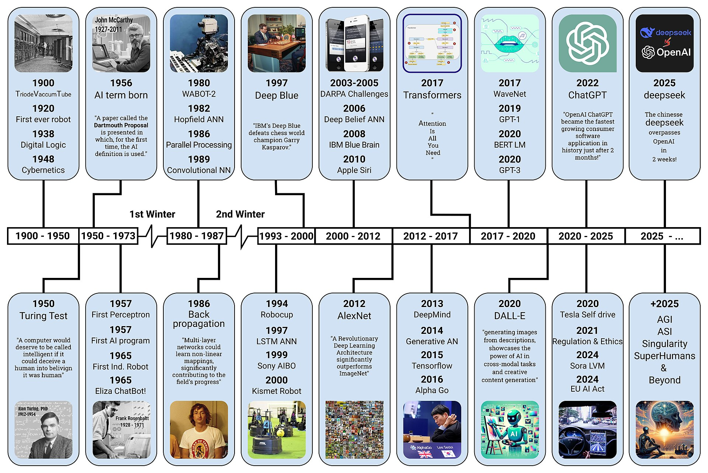

היסטוריה
היסטוריה של הבינה המלאכותית
עמוד זה מציג את התפתחות הבינה המלאכותית בסדר כרונולוגי, מהנוירון המלאכותי הראשון ועד מרוץ ה־AI העולמי.

AI Timeline
ציר הזמן של הבינה המלאכותית
עמוד כרונולוגי שיגדל בהדרגה ויכלול אירועים מרכזיים מראשית התחום ועד היום.